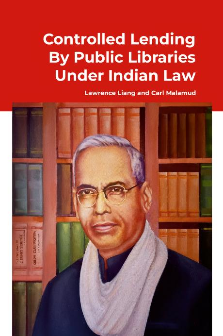

ಫೆಬ್ರ 2023
Controlled Lending by Public Libraries Under Indian Law
ಲಾರೆನ್ಸ್ ಲಿಯಾಂಗ್ ಮತ್ತು ಕಾರ್ಲ್ ಮಲಮಡ್
ಭಾರತದಲ್ಲಿ ಸಾರ್ವಜನಿಕ ಗ್ರಂಥಾಲಯಗಳು ಪುಸ್ತಕಗಳನ್ನು ಹೇಗೆ ಸಾಲ ಕೊಡುತ್ತವೆ ಎಂಬ ಕುರಿತು ಸಾರ್ವಜನಿಕ ಪರಿಶೀಲನೆಗಾಗಿ ಕರಡು ಲೇಖನ. ಅಭಿಪ್ರಾಯಗಳಿಗೆ ಸ್ವಾಗತ.
ಪ್ರಕಟಣೆಗಳು
ಸಾರ್ವಜನಿಕ ಗ್ರಂಥಾಲಯಗಳು, ಕಾನೂನು ಮತ್ತು ಓದುವ ಸ್ವಾತಂತ್ರ್ಯದ ಕುರಿತ ಓದು. ಎಲ್ಲವೂ Internet Archive ನಲ್ಲಿ ಉಚಿತ.

ಲಾರೆನ್ಸ್ ಲಿಯಾಂಗ್ ಮತ್ತು ಕಾರ್ಲ್ ಮಲಮಡ್
ಭಾರತದಲ್ಲಿ ಸಾರ್ವಜನಿಕ ಗ್ರಂಥಾಲಯಗಳು ಪುಸ್ತಕಗಳನ್ನು ಹೇಗೆ ಸಾಲ ಕೊಡುತ್ತವೆ ಎಂಬ ಕುರಿತು ಸಾರ್ವಜನಿಕ ಪರಿಶೀಲನೆಗಾಗಿ ಕರಡು ಲೇಖನ. ಅಭಿಪ್ರಾಯಗಳಿಗೆ ಸ್ವಾಗತ.

ಲಾರೆನ್ಸ್ ಲಿಯಾಂಗ್ ಮತ್ತು ಆದಿತ್ಯ ಗುಪ್ತಾ
ಭಾರತದ ಸ್ವಾತಂತ್ರ್ಯ ಚಳವಳಿಯಲ್ಲಿ ಸಾರ್ವಜನಿಕ ಗ್ರಂಥಾಲಯಗಳ ಪಾತ್ರದ ಇತಿಹಾಸ, ರಾಜ್ಯ ಮತ್ತು ರಾಷ್ಟ್ರ ಮಟ್ಟದ ಗ್ರಂಥಾಲಯ ಕಾನೂನುಗಳನ್ನು ಜಾರಿಗೆ ತರಲು ನಡೆದ ಪ್ರಯತ್ನಗಳೂ ಸೇರಿ.

ಕಾರ್ಲ್ ಮಲಮಡ್
ಕನ್ನಡ ವಿಶ್ವವಿದ್ಯಾಲಯ, ಹಂಪಿಯಲ್ಲಿ 2024ರ ಏಪ್ರಿಲ್ 15ರಂದು ನೀಡಿದ ಜ್ಞಾನ ಸತ್ಯಾಗ್ರಹ ಸೇರಿದಂತೆ ನಾಲ್ಕು ಭಾಷಣಗಳು.